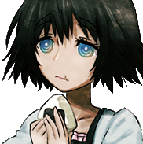

greensci
Developer & ArchivistLead developer of the Rockstar Games Archive website. Handles web development and technical implementation.

The dedicated individuals leading our preservation efforts
Lead developer of the Rockstar Games Archive website. Handles web development and technical implementation.

Lead archivist responsible for the majority of collection, preservation, and organization efforts. Main contributor to archive acquisition and content curation.
Active community providing support, research assistance, and contributions to our archive efforts.
We're always looking for passionate individuals to help with our mission of preserving gaming history. Whether you're a developer, researcher, or simply a fan who wants to contribute, there's a place for you in our community.
Join Our Discord Community